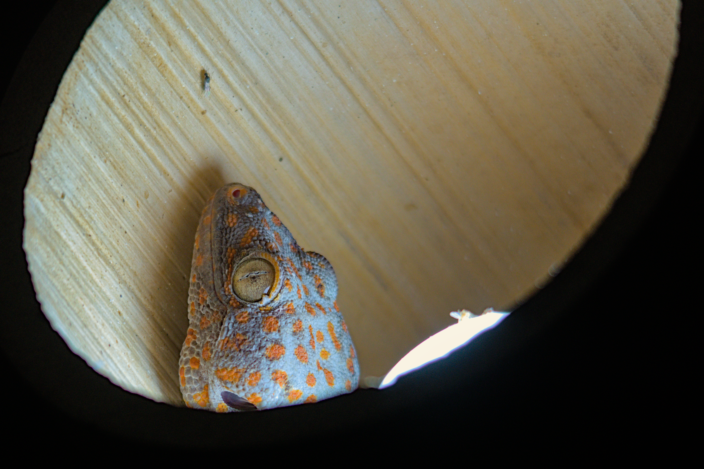

Nikon D500 · Sigma 150-500mm @ 300mm · f/6.3 · 1/400 s · ISO 1000 · November 2022 · Bali, Indonesia
A colorful Tokay gecko (Gekko gecko) peeking at us from inside a ceiling lamp. Or maybe it is the flying lunch in front of the animal that has its attention.